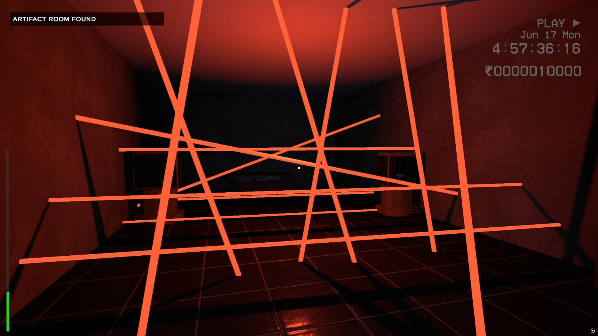
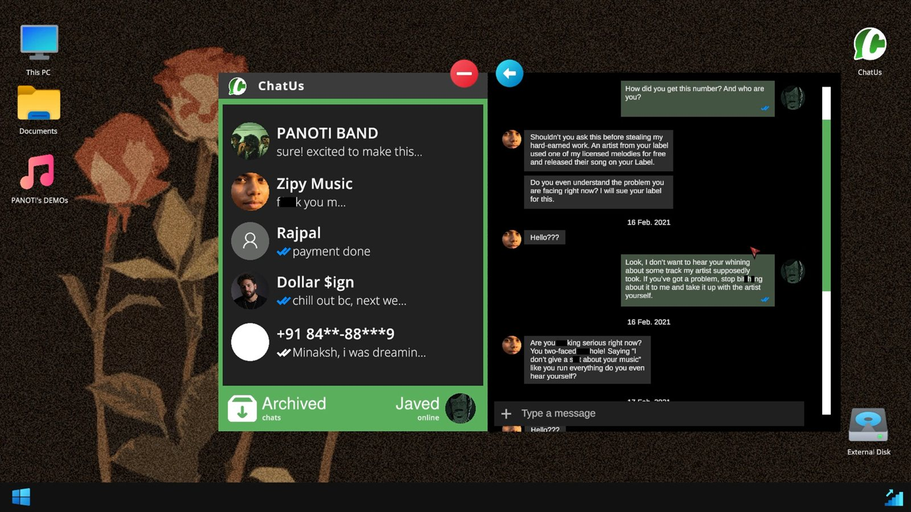
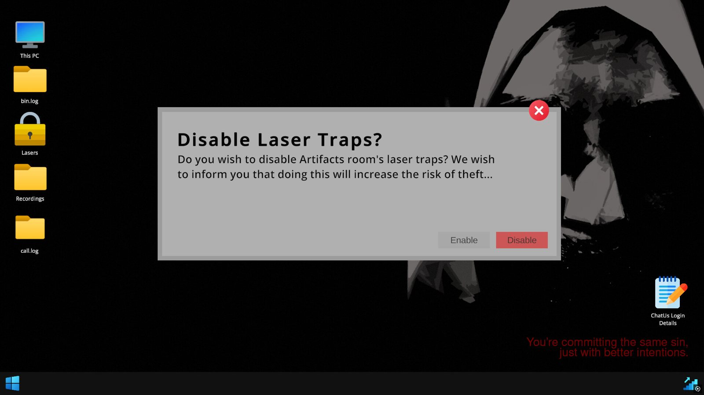
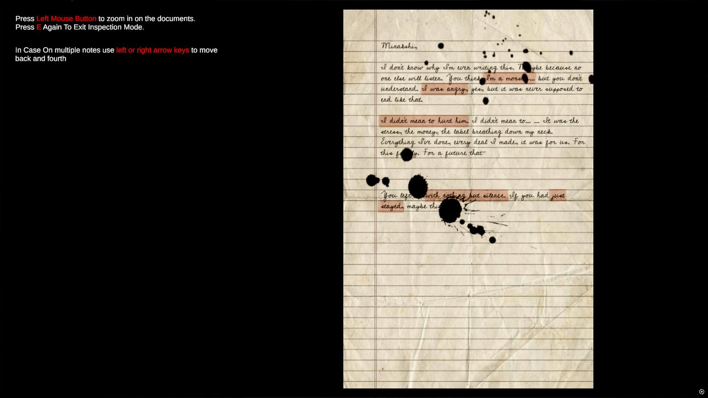
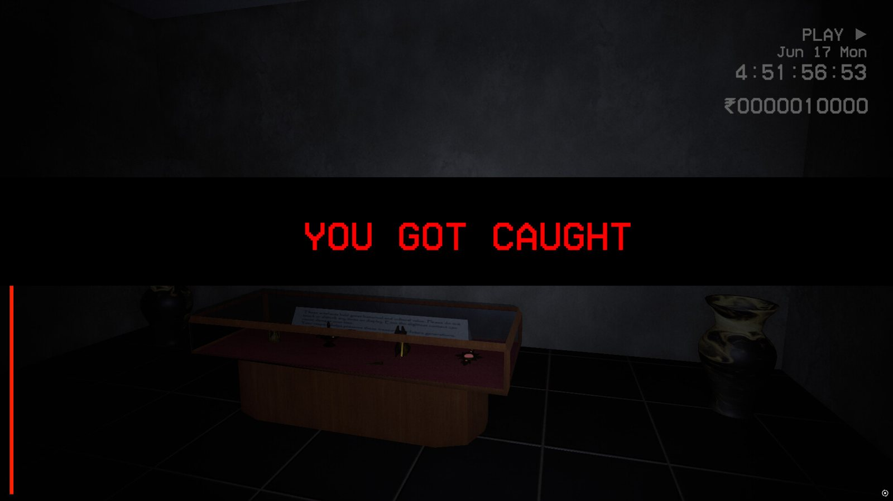
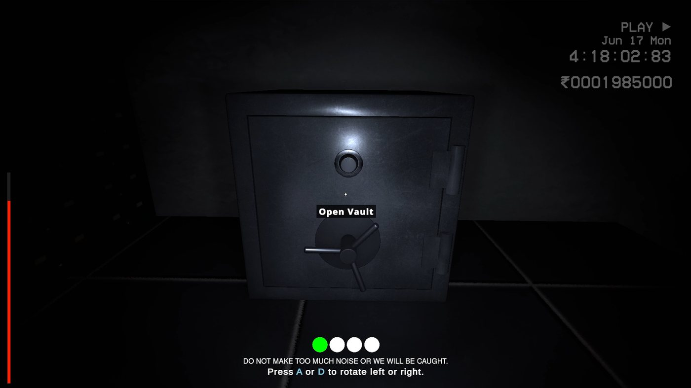
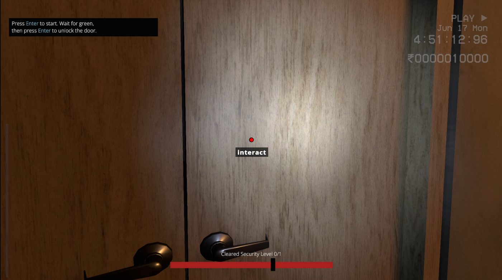
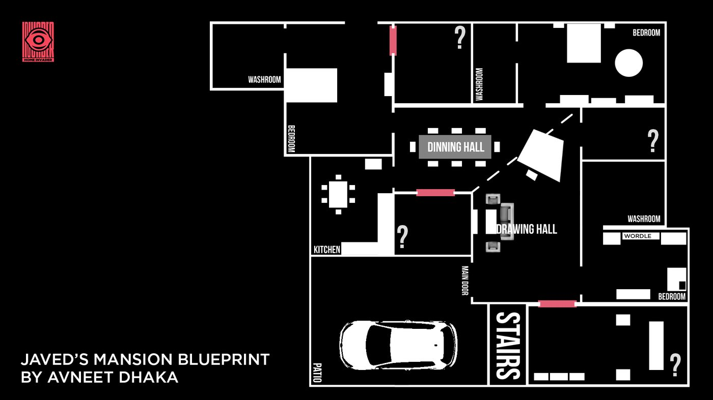
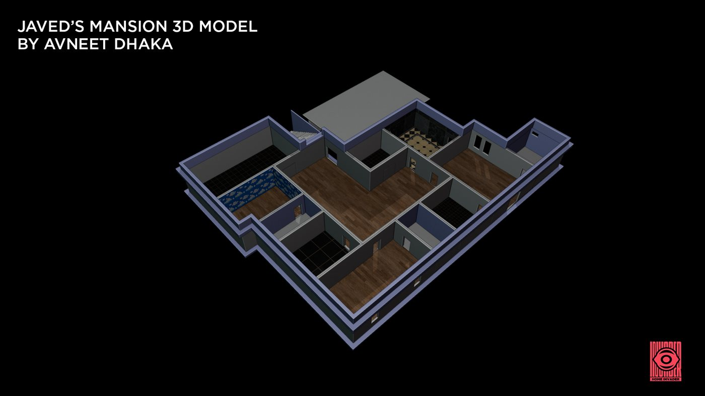

Home Invader
Home Invader is a first-person stealth-horror experience where silence becomes your only weapon.
You break into a wealthy man’s isolated villa at night, but something about the place feels wrong the moment you step inside. Every floorboard creak, every drawer you open, every breath you take feeds into a noise system that reacts to your mistakes. The house listens, the darkness watches, and your only goal is simple: get in, steal what you need, and get out alive.
Built as an experiment in tension-based gameplay, Home Invader replaces traditional enemies with fear of the unknown. The environment itself becomes your threat — creaking wood, flickering lights, distant knocks, and unsettling ambience that makes you question if you’re alone.
It’s a slow-burn, anxiety-heavy game where the fear comes from what you hear, not what you see.
Trailer
My roles
Responsibilities
- Designed core stealth loop and noise meter system
- Built levels using modular blockouts
- Created UI layouts and iconography
- Composed ambient soundscapes and SFX
- Wrote narrative beats and environmental storytelling
- Implemented enemy logic and triggers
Screenshots





My design breakdown
How it works
Core gameplay systems
- Noise Meter
- Perfection Meter
- Object Rotation / Hidden Walls / Hidden Room
- Javed's Mansion
Additional work
- Story and Timeline
- In-Game Documents
- Hanging Bodies / KanBan Death Board
- Computer UI and ChatUs
- Game UI / UX
- In-Game Cinematics
- In-Game Sounds and OST
01
Noise Meter
Noise Meter is the face of Home Invader. The player invades the house of Javed Garohar, but the catch is that every sound you make adds to the noise meter.
It works on a simple logic. Each object has a set +dB amount — for example, Door Open / Close = +5 dB. The meter goes up as these values add together. To bring it down, it works like a gauge: when the player stays idle, it drops by 1 at a time. This raises the stakes of every move.
The meter shows as a Noise Bar in the HUD. Its color shows how full it is, and the Narrator gives warnings to keep quiet as it fills. When the bar reaches 100, the house sets off an alarm, wakes the security guard, and the player is caught.

02
Perfection Meter
The Perfection Meter is an interaction system used to unlock doors, designed to introduce controlled tension through timing and precision. It operates as a left-to-right moving bar divided into three zones — Red, Yellow, and Green — and the player must stop the indicator inside the Green zone to unlock the door cleanly.
This system turns a simple interaction into a skill-based challenge, and ties player precision directly to the core stealth loop.

03
Object Rotation / Hidden Walls / Hidden Door
The layout of the mansion was designed to encourage exploration and layered discovery, using interactive objects as keys to hidden spaces. The challenge was not just placing important areas, but making them feel naturally hidden in the environment.
To solve this, I added hidden walls triggered by object interaction, turning environmental details into gameplay. Players must observe, interpret, and move objects to reveal secret areas.
Three main hidden rooms
- Security Room
- Unlocked by rotating a two-piece emerald statue into a symmetrical alignment, which triggers a hidden wall.
- Antique Room
- Accessed by rotating an abstract painting. The artwork forms an inverted face, and aligning it correctly reveals the hidden passage.
- Torture Room
- A multi-step unlock. Players first activate a hidden library mechanism using a specific book, which reveals a second door. The final step is finding a key to unlock the inner chamber.

04
Javed's Mansion
Level design & spatial experience
Javed’s Mansion is built around a 3BHK home layout, expanded with hidden and restricted spaces to support both progression and story. It is meant to feel grounded and believable, while quietly guiding how the player moves.
Main layout
- Main Bedroom – personal space tied to Javed and Minakshi
- Infant Room – emotionally driven storytelling space
- Guest Room – transitional exploration area
Special zones
- Security Room – system control and high-risk area
- Artifact Room – puzzle-driven interaction space
- Torture Room – narrative payoff and high-intensity discovery
A restricted second floor acts as a narrative anchor. Because players can't enter it, it builds curiosity and tension as a forbidden space.
Gameplay impact
- Tight corridors and door placements force players to make deliberate movement decisions
- Room clustering raises the risk of noise building up, so moving around becomes a strategic choice
- Hidden spaces reward observation and break up linear exploration, so players slow down
- Layered access (locks, hidden walls, multi-step entry) controls pacing and stops players reaching key areas too early
Design intent
- Ground the experience in a realistic, relatable layout
- Use space to create tension without direct threats
- Encourage slow, intentional exploration
- Put the story inside the environment instead of long explanations
Role & contribution
I made the complete environment, including layout design, 3D modeling, and texturing. The whole gameplay experience is built around this space.

05
Story, UI & Presentation
The story of Home Invader is told through environmental storytelling, interactive systems, and audiovisual design, so the player uncovers it on their own instead of being told. The story and timeline come out bit by bit through in-game documents, and players piece the events together themselves.
The Computer UI and ChatUs work as controlled windows into the story, giving context while keeping the player engaged. Visual elements like the Hanging Bodies and the KanBan Death Board give quick, wordless hints at the darker themes and past events.
The UI/UX balances clarity with immersion, so players get what they need without breaking the tension. I made the intro cinematics in Blender, and the sound design and original OST in FL Studio. Together they build psychological pressure and guide the player's emotions.
Music I made for Home Invader